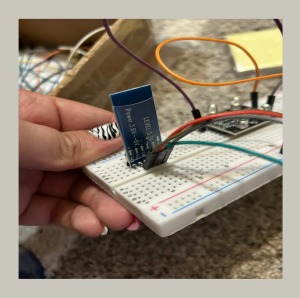
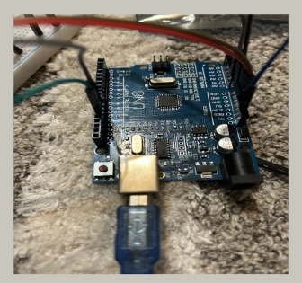
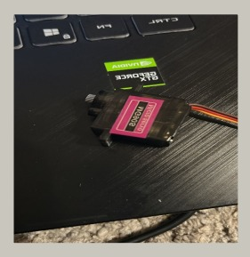
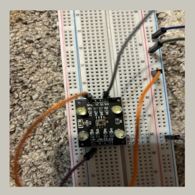
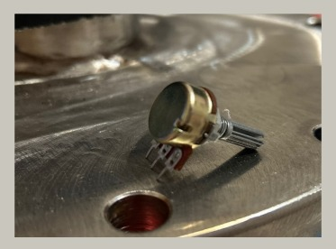

Componente utilizate
Modul Bluetooth HC-05
 Tensiune de alimentare: 3.6 - 6V;
Curent consumat: maxim 30mA;
Pinii de I/O sunt compatibili pentru 3.3V ; Comunica pe serial UART;
Baudrate: 9600 - 460800 bps;
Distanta de transmisie pana la 10m; Putere de transmisie: +4dBm;
Senzitivitate receptie: -80dBm.
Arduino Uno
Microcontroler: ATmega328 Tensiune de lucru: 5V
Tensiune de intrare (recomandat): 7-12V Tensiune de intrare (limita): 6-
20V
Pini digitali: 14 (6 PWM output)
Pini analogici: 6
Curent per pin I/O: 40 mA Curent 3.3V: 50 mA
Memorie Flash: 32 KB (ATmega328) 0.5 KB pentru bootloader SRAM: 2
KB (ATmega328)
EEPROM: 1 KB (ATmega328)
Clock Speed: 16 MHz
Servomotor MG90S
Greutate: 13.4g
Dimensiuni mm: 22.8 x 12.2 x 28.5mm
Cuplu in stall: 1.8kg/cm(4.8V ), 2.2kg/cm(6V)
Viteza operare: 0.1sec/60 grade (la 4.8v), 0.08sec/60 grade (la 6v)
Raza rotatie: 0 - 180 grade
Tensiune alimentare: 4.8 - 6.0VDC
Senzor de culoare TCS230
Tensiune de operare: 2.7V - 5.5V
Potentiometru
Unghi rotatie: 300 grade
Ciclu de viata rotatii: 10.000 cicluri
Rezistenta: Variabila
Lungime ax: 8.5mm
Lungime ax cu filet: 15mm
Grosime ax: 6mm
Tip potentiometru: Liniar